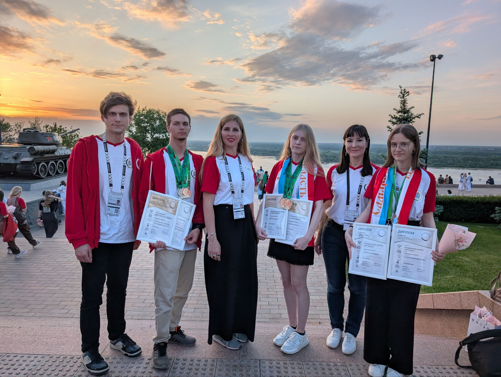
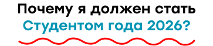
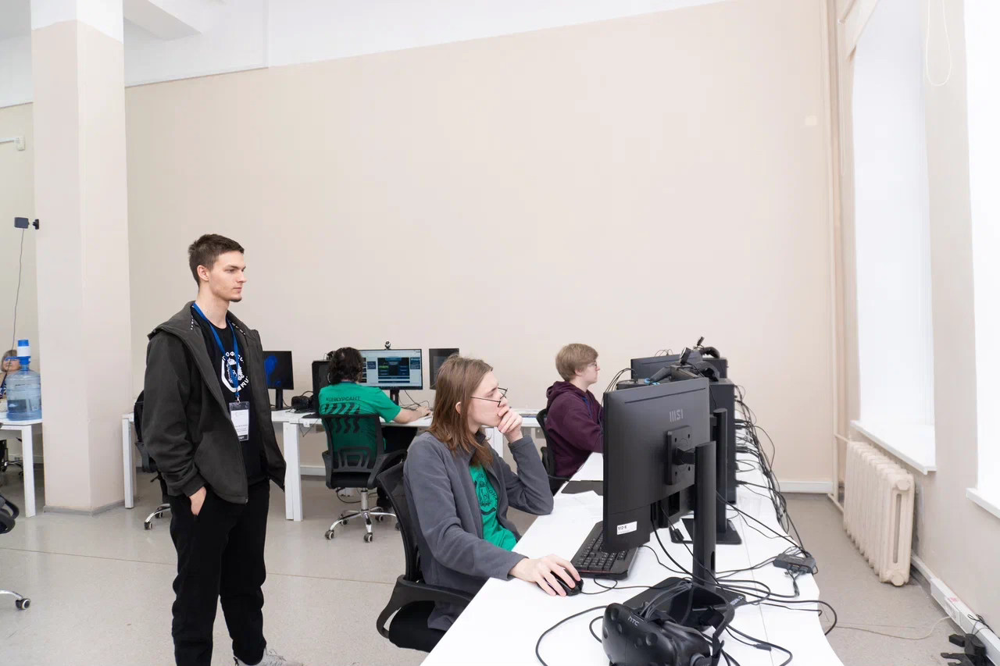
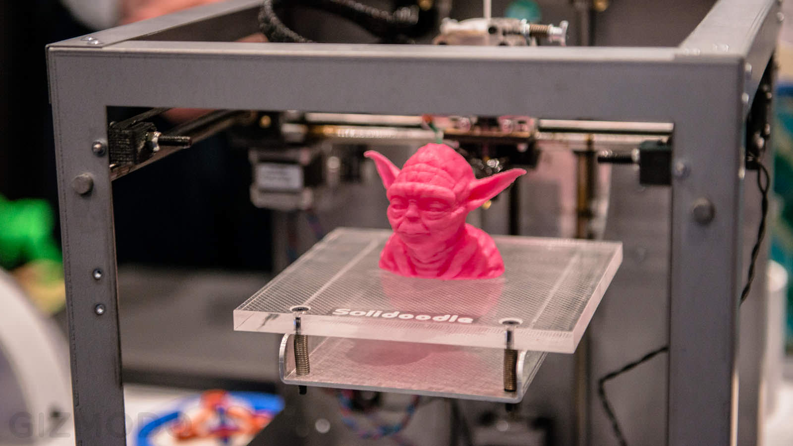
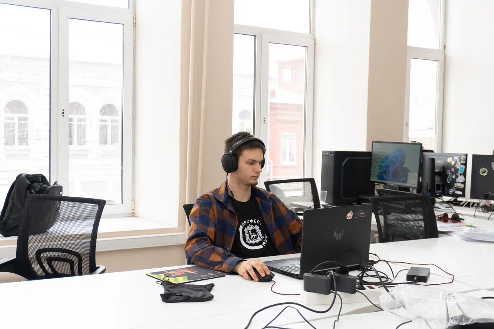
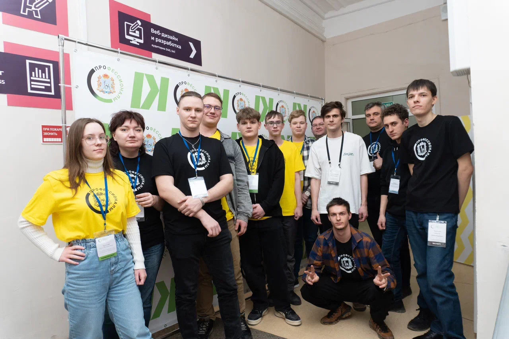
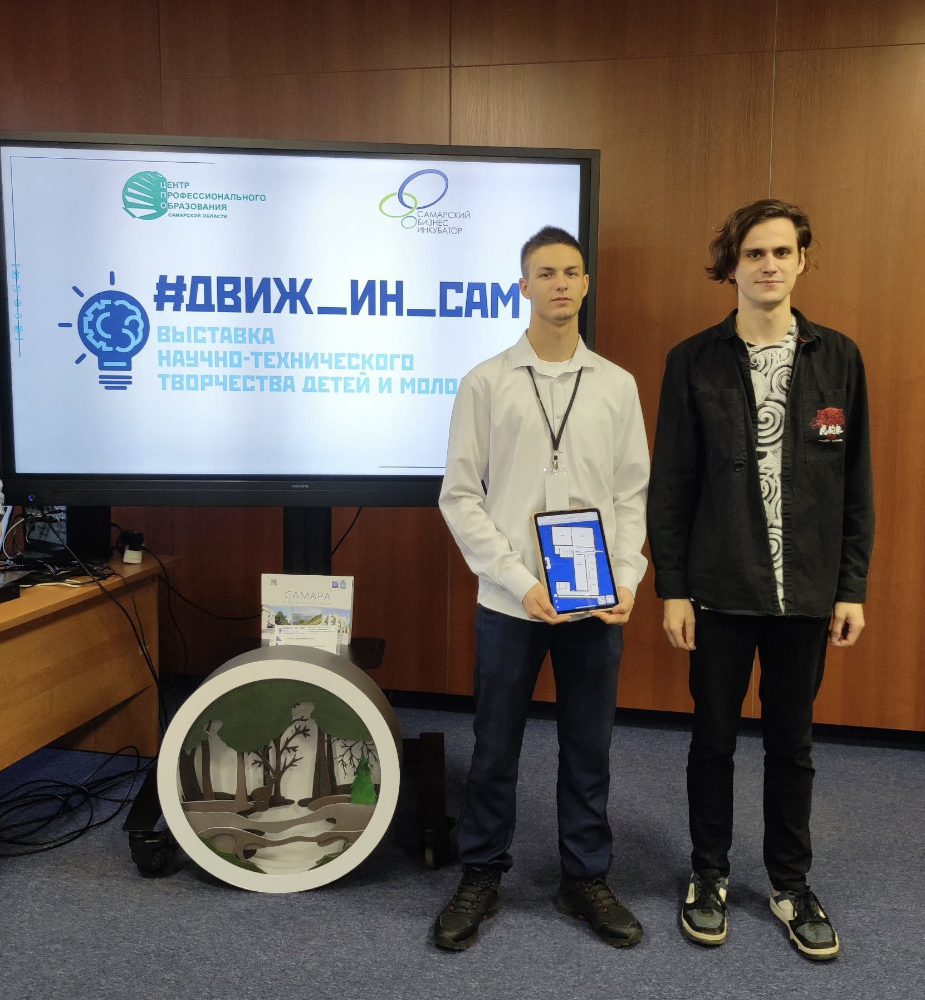

ПОБЕЖДАЮ
Победитель регионального этапа чемпионата «Профессионалы» и бронзовый призёр финала в компетенции «Разработка виртуальной и дополненной реальности».



Победитель регионального этапа чемпионата «Профессионалы» и бронзовый призёр финала в компетенции «Разработка виртуальной и дополненной реальности».

Прошёл путь от участника до наставника. В 2026 году подготовил победителя регионального этапа чемпионата «Профессионалы».

Премию за победу и призёрство вложил в своё развитие. Купил собственный 3D-принтер, самостоятельно освоил 3D-печать и создаю проекты.

Применяю знания не только в колледже. Получил практический опыт в интернет-студии «Вебровер» и работал в детско-юношеской школе программирования. На данный момент программист в СГК.

Участвую в чемпионатном движении не только ради собственных результатов. Являюсь волонтёром чемпионатов «Профессионалы» (категория юниоры) и «Абилимпикс».

Не останавливаюсь на достигнутом, участвую в конкурсах профессионального мастерства, осваиваю новые технологии и постоянно ищу возможности стать лучше.
Главное, что я
создаю сегодня, —
Я превращаю их в новые возможности. Именно поэтому я достоин стать Студентом года 2026. Потому что для меня настоящий успех начинается тогда, когда твои достижения помогают тебе расти, создавать новое и открывать возможности для других.